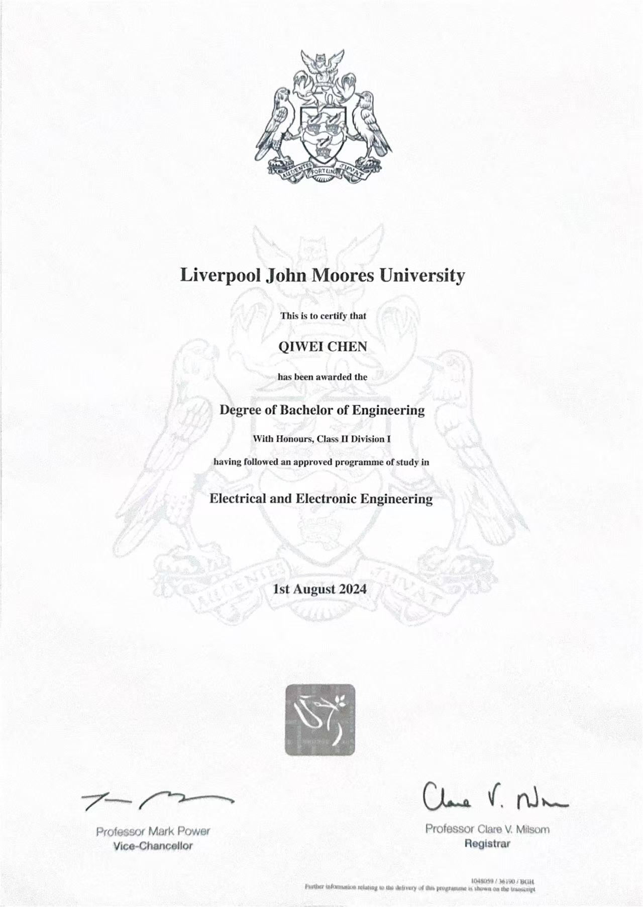
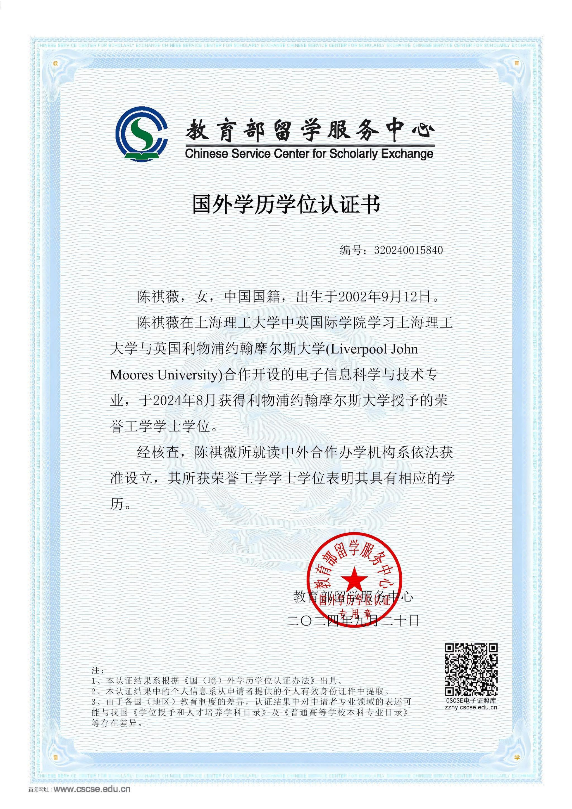

Note: The following projects are anonymized. Client names, internal screenshots, API details,
contract information, unpublished workflows, and sensitive data are not disclosed.
Smart Transportation / Product & Project Support
高速公路车牌二次巡检与车辆查验辅助系统优化Highway License Plate Re-inspection & Vehicle Verification Support Optimization
This was not a standalone license plate recognition system. It focused on license plate re-inspection,
vehicle verification data support, anomaly review assistance, and inspection workflow support.
可公开展示的能力Publicly Shareable Capabilities
复杂业务场景拆解与产品功能边界梳理
车牌二次巡检、车辆查验和异常复核流程理解
原型、需求说明、测试验收点和交付材料整理
研发、测试、现场反馈之间的沟通协调
Complex scenario decomposition and feature scope clarification
Understanding of re-inspection, vehicle verification, and anomaly review workflows
Prototype, requirement, testing, and delivery documentation
Coordination among development, testing, and field feedback
Data Platform / Government-enterprise Project
数据要素加工平台迭代支持Data Element Processing Platform Iteration Support
This research focused on image information security and steganalysis, including F5 steganography,
JPEG statistical features, DCT coefficient changes, and MATLAB-based verification.
可体现的能力Demonstrated Capabilities
信息安全与图像处理方向的研究理解能力
文献阅读、理论框架整理和实验流程构建能力
MATLAB 图像处理和实验验证能力
Research understanding in information security and image processing
Literature review, theoretical structuring, and experiment design
MATLAB-based image processing and experimental verification
注：毕业论文原文包含个人信息、学校信息、完整代码和原始报告内容，因此不公开 PDF。
Note: The full thesis PDF is not published because it contains personal information, university information,
code appendices, and original report content.
Public Data / Pricing Thinking
公共物联网数据价格形成机制研究Public IoT Data Pricing Mechanism Research
This research focused on pricing mechanisms for public IoT data in scenarios such as low-altitude economy,
smart water management, public governance, and industry data services.
Certificates & Intellectual Property
软著 / 专利Software Copyrights & Patents
Note: The certificate images should be anonymized, low-resolution, and watermarked before upload.
This page adds preview watermarks and disables casual right-click saving, but cannot fully prevent screenshots or technical downloads.
Participated in functional testing, data recording, and debugging optimization for oxygen detector products.
2022.07 – 2022.10
厦门 ABB 有限公司ABB Xiamen
电子工程师 实习Electronic Engineer Intern
参与工业电气产品资料整理、客户支持材料和区域信息分析。
Supported industrial electrical product documentation, customer materials, and regional information analysis.
Skills
我的技能Skills
产品与项目Product & Project
Requirement Analysis
PRD Writing
Prototype Design
Project Scheduling
Cross-team Communication
Testing & Acceptance
技术与工程基础Technical & Engineering Basics
Python Practice
MATLAB Practice
HTML / CSS Basics
Machine Learning Basics
Image Processing Basics
Control Systems Basics
Education & Credentials
学历与认证Education & Credentials
Note: The following images should be anonymized, low-resolution, and watermarked before upload.
This page adds preview watermarks but cannot fully prevent screenshots or technical downloads.
2020 – 2024
上海理工大学中英国际学院Sino-British College, University of Shanghai for Science and Technology
本科 | 电子电气工程Bachelor | Electrical and Electronic Engineering

本科毕业证 / Bachelor Degree Certificate

本科留服认证 / Academic Qualification Certificate
2024 – 2025
香港岭南大学Lingnan University
硕士 | 人工智能与商业分析Master | Artificial Intelligence and Business Analytics